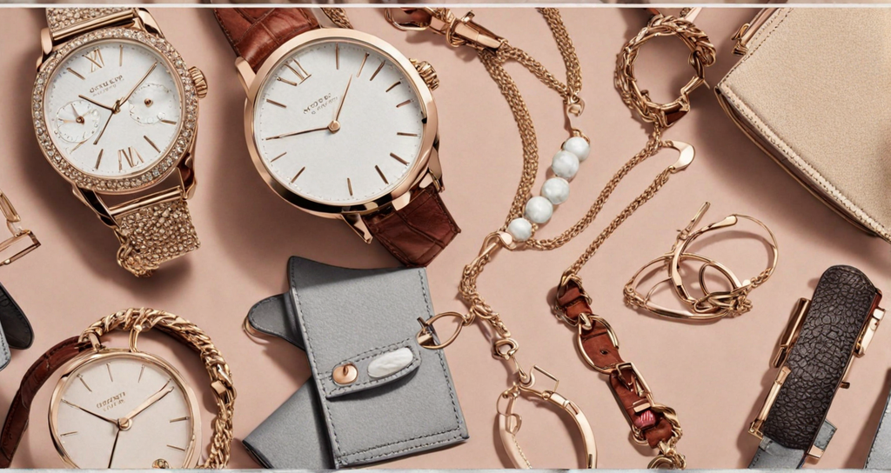
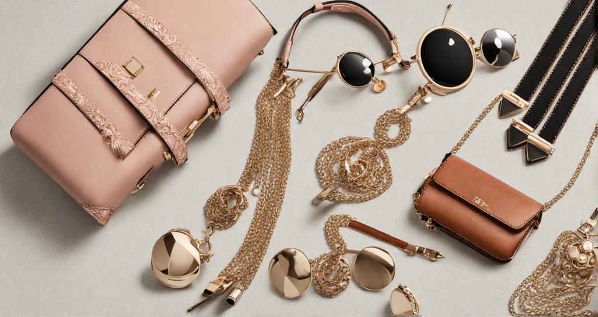

Kunal
Rana
Trendy Accessories to Elevate Your Look
Accessories have a remarkable ability to transform an ordinary outfit into an extraordinary ensemble, adding flair, personality, and a touch of sophistication. In the ever-evolving landscape of fashion, trendy accessories serve as the perfect punctuation marks, allowing you to express your unique style and creativity. From statement earrings that frame your face to chic scarves that add a pop of color, the right accessory can elevate your look and make a lasting impression.
One of the timeless accessories that never go out of style is a classic wristwatch. Beyond its practical function, a well-designed watch can serve as a fashion statement, reflecting your personality and taste. Opt for a minimalist design for a contemporary look or choose a vintage-inspired piece to add a touch of nostalgia. Watches come in various materials, from stainless steel to leather, allowing you to select one that complements your overall style. Moreover, watches are versatile accessories, suitable for both casual and formal occasions, making them a must-have in every wardrobe.
Elegance is an attitude. Accessories are an opportunity.
When it comes to jewelry, layering delicate necklaces has become a trend that continues to gain popularity. Mixing and matching necklaces of different lengths and styles create a visually appealing effect, drawing attention to your neckline. Consider pairing a dainty pendant necklace with a longer chain adorned with meaningful charms. This combination adds depth to your outfit and serves as a conversation starter. Additionally, stackable rings have become a favorite among fashion enthusiasts. Whether you prefer minimalist bands or intricate designs, stacking rings on different fingers or even on the same one can add an edgy and contemporary vibe to your look.
Scarves, another versatile accessory, offer endless styling possibilities. Whether worn around the neck, tied onto a handbag, or used as a headband, scarves provide a splash of color and texture to your outfit. Opt for lightweight silk scarves during warmer months and cozy knits in the winter. The patterns and colors of scarves can effortlessly elevate a monochromatic outfit or complement the hues of your clothing, creating a harmonious and polished appearance.
Lastly, statement earrings have the power to transform your entire look. From oversized hoops that exude confidence to elegant chandelier earrings that add a touch of glamour, the right pair can become the focal point of your outfit. Bold earrings work exceptionally well with simple, sleek hairstyles, drawing attention to your face and highlighting your features. Whether you choose vibrant colors, intricate designs, or unique shapes, statement earrings are an excellent way to showcase your personality and make a memorable fashion statement.
In essence, trendy accessories are the key to unlocking the full potential of your wardrobe. By carefully selecting and styling these items, you can elevate your look, boost your confidence, and showcase your individuality to the world. Remember, accessories are not just embellishments; they are the storytellers of your style journey, enhancing your outfits and making every ensemble uniquely yours.